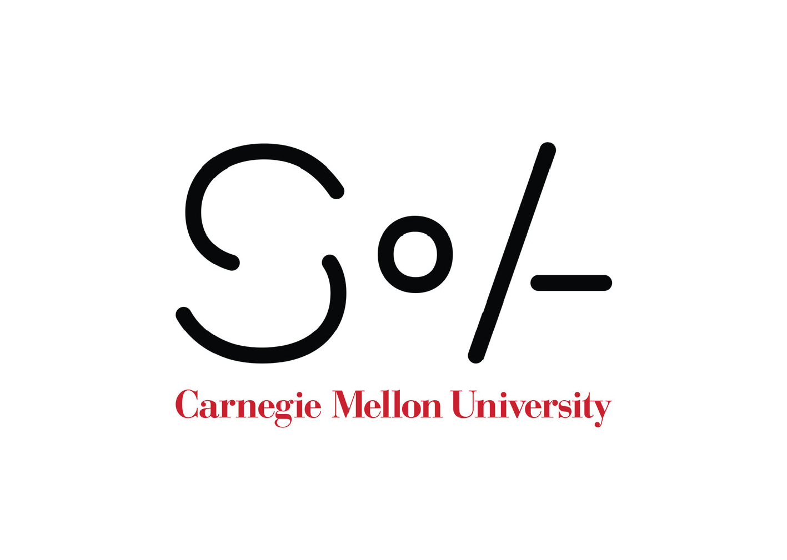

Center for Building Performance and Diagnostics
Team
- Brad Chin
- Karen Segal
- Maggie Yu
Opportunity
In the spring of 2015, the CBPD partnered with an Information Systems student project team with the goal of addressing the lack of engagement within the CMU community to conserve energy on campus. The previous team conducted an extensive amount of research in order to determine the cause of the lack of engagement problem, and eventually chose to build a Django web application with the goals of improving the CMU Facilities Management Services (FMS) service request process and bridging the gap between the CMU community and FMS personnel. Through the application named ConnectFMS, members of the CMU community can make posts on energy conservation issues as well as utility problems they see around campus by taking a photo and writing a short description. After seeing the work produced by the previous team, the client hoped to have ConnectFMS deployed on their own server in order to support the collection of real usage data from the campus community. Furthermore, the client wanted to test the existing application in a realistic environment in order receive user feedback to evaluate the effectiveness of the application and make improvements and modifications.
Outcomes
We improved upon the Django web application we inherited from the previous student team by conducting three rounds of user testing, incorporating user feedback into the application based on these results, and implementing requested new features for ConnectFMS. We were able to deploy our application on the client’s server with the Andrew Shibboleth authentication system installed before we recruited real users to test out our application from the CMU community. In addition, we presented our work and findings from the semester to two representatives from FMS.
Deliverables
ConnectFMS is currently deployed on the client’s server, and we have shared our code repository with the client on Bitbucket. We also created technical documentation containing important information needed to access and maintain the application in the future.